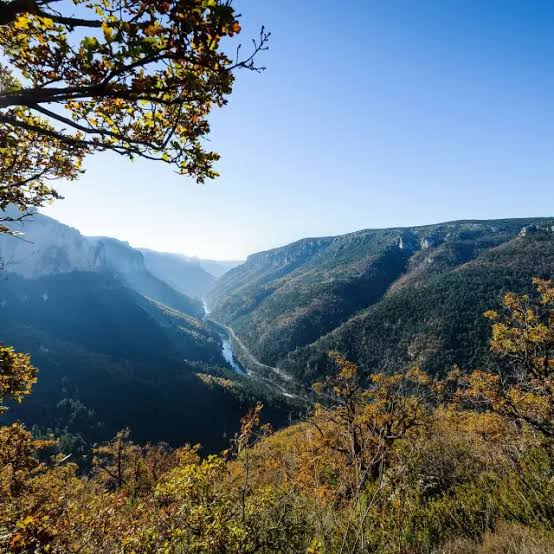

Parc national
des CévennesRéserve de biosphère UNESCO


⟹ Sites Emblématiques ⟸
Trois roches, trois paysages. Le territoire du parc repose sur trois grands ensembles géologiques. Le granite forme les dômes arrondis du mont Lozère, dont le sommet de Finiels culmine à 1 699 mètres. Les schistes, plus friables, sont entaillés de vallées profondes et de crêtes étroites, les fameuses « serres » cévenoles. Enfin, les calcaires des causses dessinent de hauts plateaux secs et des gorges spectaculaires. Cette diversité explique la variété des paysages, des sols et des modes de vie.
Une ligne de partage des eaux. Les Cévennes marquent la limite entre les bassins atlantique et méditerranéen. Le mont Aigoual, à 1 567 mètres, voit ses eaux s’écouler d’un côté vers le Tarn et la Garonne, de l’autre vers le Gard et la Méditerranée. Ce relief provoque de violents « épisodes cévenols » : à l’automne, l’air chaud et humide venu de la mer se heurte aux montagnes et déclenche des pluies diluviennes et des crues brutales, qui ont profondément marqué l’histoire des vallées.
Des hommes depuis la Préhistoire. Dès le Néolithique, les hommes parcourent et occupent ces montagnes. Les menhirs, dolmens et alignements du mont Lozère et des causses, parmi les plus nombreux du sud de la France, témoignent de ces premières sociétés d’éleveurs. Les défrichements engagés alors ouvrent les premiers pâturages et amorcent la transformation des paysages forestiers.
Les drailles et la transhumance. Pendant des siècles, d’immenses troupeaux de moutons montent chaque été des plaines du Languedoc vers les pâturages d’altitude du mont Lozère et de l’Aigoual. Ils empruntent les drailles, larges chemins de transhumance qui suivent les crêtes. Au Moyen Âge, les ordres religieux et militaires, notamment les Hospitaliers qui possèdent de vastes domaines sur le mont Lozère, organisent une partie de cet élevage ; des bornes gravées de la croix de Malte en marquent encore les limites.

Le châtaignier, « arbre à pain ». Dans les vallées schisteuses, le châtaignier devient à partir du Moyen Âge la ressource vitale des Cévenols. Ses fruits, séchés dans de petits bâtiments appelés clèdes, puis décortiqués, nourrissent hommes et bêtes pendant l’hiver. Pour cultiver ces pentes abruptes, les habitants édifient des milliers de kilomètres de terrasses en pierre sèche, les bancels ou faïsses, soutenues par des murets et irriguées par un réseau minutieux de rigoles.
L’âge d’or de la soie. Du XVIIe au XIXe siècle, la sériciculture transforme l’économie cévenole. Les mûriers sont plantés partout pour nourrir les vers à soie, élevés dans des magnaneries aux nombreuses fenêtres, tandis que des filatures s’installent dans les vallées. Au milieu du XIXe siècle, la pébrine, maladie du ver à soie, ruine la filière ; Louis Pasteur séjourne près d’Alès entre 1865 et 1869 pour l’étudier, sans pouvoir enrayer le déclin face à la concurrence asiatique.
Terre de Réforme et de résistance. Au XVIe siècle, les Cévennes adhèrent massivement au protestantisme. Après la révocation de l’édit de Nantes en 1685, les réformés sont persécutés et contraints de pratiquer leur culte clandestinement, au « Désert ». En juillet 1702, le meurtre de l’abbé du Chayla au Pont-de-Montvert déclenche la guerre des Camisards, menée par des chefs comme Roland et Jean Cavalier. En 1703, le pouvoir royal ordonne le « grand brûlement » des Hautes Cévennes, qui détruit plusieurs centaines de hameaux. Le musée du Désert, au Mas Soubeyran, en conserve la mémoire.
Stevenson et Modestine. En 1878, l’écrivain écossais Robert Louis Stevenson traverse les Cévennes à pied pendant douze jours, accompagné de l’ânesse Modestine. Son récit, Voyage avec un âne dans les Cévennes, publié en 1879, fait connaître la région dans le monde entier et évoque longuement le souvenir des Camisards. Son itinéraire est aujourd’hui balisé comme sentier de grande randonnée, le GR 70 ou « chemin de Stevenson ».
Reboiser les montagnes. Au XIXe siècle, le surpâturage et les défrichements ont mis les sols à nu et aggravé les crues dévastatrices. L’État lance alors de vastes programmes de restauration des terrains en montagne. Sur l’Aigoual, le forestier Georges Fabre conduit à partir de la fin du XIXe siècle un reboisement massif, et fait construire l’observatoire météorologique inauguré en 1894 au sommet. Les grandes forêts actuelles de hêtres et de résineux sont en grande partie issues de ces plantations.
Mines, exode et refuge. Aux XIXe et XXe siècles, les mines de charbon du bassin d’Alès et les gisements métalliques attirent la main-d’œuvre, tandis que les hautes vallées se vident. L’exode rural fait chuter la population, et de nombreuses terrasses sont abandonnées. Pendant la Seconde Guerre mondiale, l’isolement des Cévennes et la tradition protestante d’accueil en font une terre de refuge pour les persécutés et de maquis pour la Résistance.
La création du parc en 1970. Le Parc national des Cévennes est créé par décret le 2 septembre 1970. C’est le quatrième parc national français, et le seul parc national de moyenne montagne en métropole dont la zone cœur est habitée à l’année. Il ne s’agit donc pas de mettre la nature sous cloche, mais de protéger des paysages façonnés par l’homme en maintenant l’agriculture, l’élevage et la vie locale. Il couvre des territoires de la Lozère, du Gard et, dans une moindre mesure, de l’Ardèche.
Le retour de la faune sauvage. Le parc a mené des programmes de réintroduction devenus exemplaires. Les vautours fauves, disparus de la région, sont réintroduits à partir des années 1970-1980 dans les gorges des causses, suivis du vautour moine et, à partir de 2012, du gypaète barbu. Le castor, le cerf, le chevreuil et le grand tétras ont également fait l’objet de réintroductions ou de retours favorisés par la protection.
Des reconnaissances internationales. En 1985, les Cévennes deviennent réserve de biosphère de l’UNESCO, dans le cadre du programme « L’Homme et la biosphère ». En 2011, le bien « Causses et Cévennes, paysage culturel de l’agropastoralisme méditerranéen », qui englobe une grande partie du parc, est inscrit sur la Liste du patrimoine mondial. En 2018, le parc obtient le label de Réserve internationale de ciel étoilé, qui en fait l’un des plus vastes territoires protégés de la pollution lumineuse en Europe.
Un paysage culturel vivant. Le Parc national des Cévennes raconte l’histoire d’un dialogue millénaire entre des montagnes difficiles et des communautés tenaces : bergers, castanéiculteurs, sériciculteurs, mineurs, camisards et néo-ruraux. Sa charte, adoptée en 2013, associe les communes à un projet commun de protection et de développement. Parcourir le parc, c’est lire dans la pierre sèche, les drailles et les forêts la mémoire de ceux qui ont fait les Cévennes.